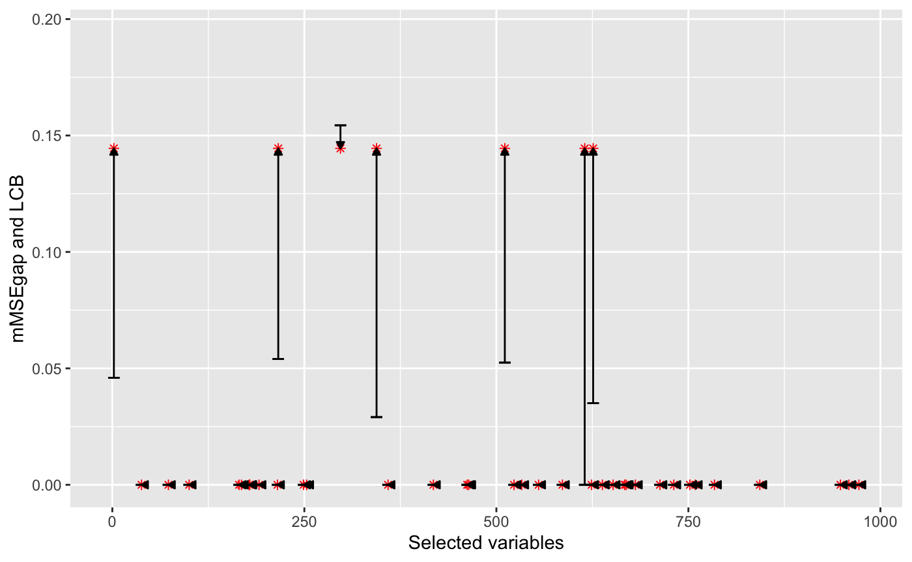

library(floodgate) library(methods) library(conformalInference) library(glmnet) #> Loading required package: Matrix #> Loaded glmnet 3.0-1 library(lars) #> Loaded lars 1.2 library(randomForest) #> randomForest 4.6-14 #> Type rfNews() to see new features/changes/bug fixes. library(SAM) #> Loading required package: splines n = 1000 p = 1000 Xmodel = "gaussian" rho = 0.3 Ydist = "gaussian" s = 10 amplitude = 5 split.prop = 0.5 K = 500 alevel = 0.05 load(paste0("../inst/rho", rho, "_Sigma.RData")) load(paste0("../inst/rho", rho, "_X_paras_gaussian.RData")) S_star = sort(sample(1:p,s)) beta = rep(0,p) beta[S_star] = sample(c(-1,1), s, replace = TRUE) * amplitude/sqrt(n) X = matrix(rnorm(n*p),n,p)%*% Sigma.chol Y = gen.Y(X, beta, Ydist = Ydist) nulls.list = sample.gaussian.nulls(X = X, S = as.list(1:p), K = K, gamma_X.list_S = gamma_X.list, sigma_X.list_S = sigma_X.list) mMSEgap = compute.mMSEgap(beta = beta, Xmodel = Xmodel, Ydist = Ydist, sigma_X.list = sigma_X.list, nulls.list = nulls.list) i1 = sample(1:n, floor(n*split.prop)) i2 = (1:n)[-i1] n1 = length(i1) n2 = length(i2) algo = "lasso" funs = funs.list[[algo]] fg.out = floodgate(X, Y, i1, i2, nulls.list = nulls.list, gamma_X.list = gamma_X.list, sigma_X.list = sigma_X.list, Xmodel = Xmodel, funs, algo = algo, alevel = alevel, verbose = TRUE) #> Initial training on 500 samples with lasso algorithm... #> Calculating mu(Xk) for variable 11 with lasso algorithm on 500 samples without Monte Carlo samples... #> Calculating mu(Xk) for variable 27 with lasso algorithm on 500 samples without Monte Carlo samples... #> Calculating mu(Xk) for variable 42 with lasso algorithm on 500 samples without Monte Carlo samples... #> Calculating mu(Xk) for variable 130 with lasso algorithm on 500 samples without Monte Carlo samples... #> Calculating mu(Xk) for variable 132 with lasso algorithm on 500 samples without Monte Carlo samples... #> Calculating mu(Xk) for variable 134 with lasso algorithm on 500 samples without Monte Carlo samples... #> Calculating mu(Xk) for variable 138 with lasso algorithm on 500 samples without Monte Carlo samples... #> Calculating mu(Xk) for variable 141 with lasso algorithm on 500 samples without Monte Carlo samples... #> Calculating mu(Xk) for variable 152 with lasso algorithm on 500 samples without Monte Carlo samples... #> Calculating mu(Xk) for variable 156 with lasso algorithm on 500 samples without Monte Carlo samples... #> Calculating mu(Xk) for variable 173 with lasso algorithm on 500 samples without Monte Carlo samples... #> Calculating mu(Xk) for variable 182 with lasso algorithm on 500 samples without Monte Carlo samples... #> Calculating mu(Xk) for variable 188 with lasso algorithm on 500 samples without Monte Carlo samples... #> Calculating mu(Xk) for variable 192 with lasso algorithm on 500 samples without Monte Carlo samples... #> Calculating mu(Xk) for variable 193 with lasso algorithm on 500 samples without Monte Carlo samples... #> Calculating mu(Xk) for variable 213 with lasso algorithm on 500 samples without Monte Carlo samples... #> Calculating mu(Xk) for variable 215 with lasso algorithm on 500 samples without Monte Carlo samples... #> Calculating mu(Xk) for variable 228 with lasso algorithm on 500 samples without Monte Carlo samples... #> Calculating mu(Xk) for variable 304 with lasso algorithm on 500 samples without Monte Carlo samples... #> Calculating mu(Xk) for variable 316 with lasso algorithm on 500 samples without Monte Carlo samples... #> Calculating mu(Xk) for variable 332 with lasso algorithm on 500 samples without Monte Carlo samples... #> Calculating mu(Xk) for variable 361 with lasso algorithm on 500 samples without Monte Carlo samples... #> Calculating mu(Xk) for variable 362 with lasso algorithm on 500 samples without Monte Carlo samples... #> Calculating mu(Xk) for variable 363 with lasso algorithm on 500 samples without Monte Carlo samples... #> Calculating mu(Xk) for variable 376 with lasso algorithm on 500 samples without Monte Carlo samples... #> Calculating mu(Xk) for variable 389 with lasso algorithm on 500 samples without Monte Carlo samples... #> Calculating mu(Xk) for variable 391 with lasso algorithm on 500 samples without Monte Carlo samples... #> Calculating mu(Xk) for variable 407 with lasso algorithm on 500 samples without Monte Carlo samples... #> Calculating mu(Xk) for variable 413 with lasso algorithm on 500 samples without Monte Carlo samples... #> Calculating mu(Xk) for variable 493 with lasso algorithm on 500 samples without Monte Carlo samples... #> Calculating mu(Xk) for variable 504 with lasso algorithm on 500 samples without Monte Carlo samples... #> Calculating mu(Xk) for variable 512 with lasso algorithm on 500 samples without Monte Carlo samples... #> Calculating mu(Xk) for variable 516 with lasso algorithm on 500 samples without Monte Carlo samples... #> Calculating mu(Xk) for variable 547 with lasso algorithm on 500 samples without Monte Carlo samples... #> Calculating mu(Xk) for variable 561 with lasso algorithm on 500 samples without Monte Carlo samples... #> Calculating mu(Xk) for variable 563 with lasso algorithm on 500 samples without Monte Carlo samples... #> Calculating mu(Xk) for variable 588 with lasso algorithm on 500 samples without Monte Carlo samples... #> Calculating mu(Xk) for variable 594 with lasso algorithm on 500 samples without Monte Carlo samples... #> Calculating mu(Xk) for variable 615 with lasso algorithm on 500 samples without Monte Carlo samples... #> Calculating mu(Xk) for variable 625 with lasso algorithm on 500 samples without Monte Carlo samples... #> Calculating mu(Xk) for variable 651 with lasso algorithm on 500 samples without Monte Carlo samples... #> Calculating mu(Xk) for variable 654 with lasso algorithm on 500 samples without Monte Carlo samples... #> Calculating mu(Xk) for variable 677 with lasso algorithm on 500 samples without Monte Carlo samples... #> Calculating mu(Xk) for variable 704 with lasso algorithm on 500 samples without Monte Carlo samples... #> Calculating mu(Xk) for variable 729 with lasso algorithm on 500 samples without Monte Carlo samples... #> Calculating mu(Xk) for variable 733 with lasso algorithm on 500 samples without Monte Carlo samples... #> Calculating mu(Xk) for variable 753 with lasso algorithm on 500 samples without Monte Carlo samples... #> Calculating mu(Xk) for variable 811 with lasso algorithm on 500 samples without Monte Carlo samples... #> Calculating mu(Xk) for variable 832 with lasso algorithm on 500 samples without Monte Carlo samples... #> Calculating mu(Xk) for variable 852 with lasso algorithm on 500 samples without Monte Carlo samples... #> Calculating mu(Xk) for variable 874 with lasso algorithm on 500 samples without Monte Carlo samples... #> Calculating mu(Xk) for variable 877 with lasso algorithm on 500 samples without Monte Carlo samples... #> Calculating mu(Xk) for variable 904 with lasso algorithm on 500 samples without Monte Carlo samples... #> Calculating mu(Xk) for variable 923 with lasso algorithm on 500 samples without Monte Carlo samples... #> Calculating mu(Xk) for variable 969 with lasso algorithm on 500 samples without Monte Carlo samples... #> Calculating mu(Xk) for variable 988 with lasso algorithm on 500 samples without Monte Carlo samples... #> Calculating V_mean for lasso algorithm without Monte Carlo samples... #> Performing floodgate without Monte Carlo samples... inf.out = as.data.frame(fg.out$inf.out) S = unlist(fg.out$S) inf.out$mMSEgap = mMSEgap[S] library(ggplot2) #> #> Attaching package: 'ggplot2' #> The following object is masked from 'package:randomForest': #> #> margin ggplot(data = inf.out, aes(x = S, y = mMSEgap)) + ylim(0, max(inf.out$mMSEgap) + 0.05) + ylab("mMSEgap and LCB") + xlab("Selected variables") + geom_point(colour = "red", shape = 8) + geom_errorbar(aes(ymin=LCB, ymax=LCB), width = 15) + geom_segment(aes(x = S, y = LCB, xend = S, yend = mMSEgap), arrow = arrow(length = unit(0.15, "cm"), type = "closed") )
